Carbon Sequestration & Terrestrial Sinks
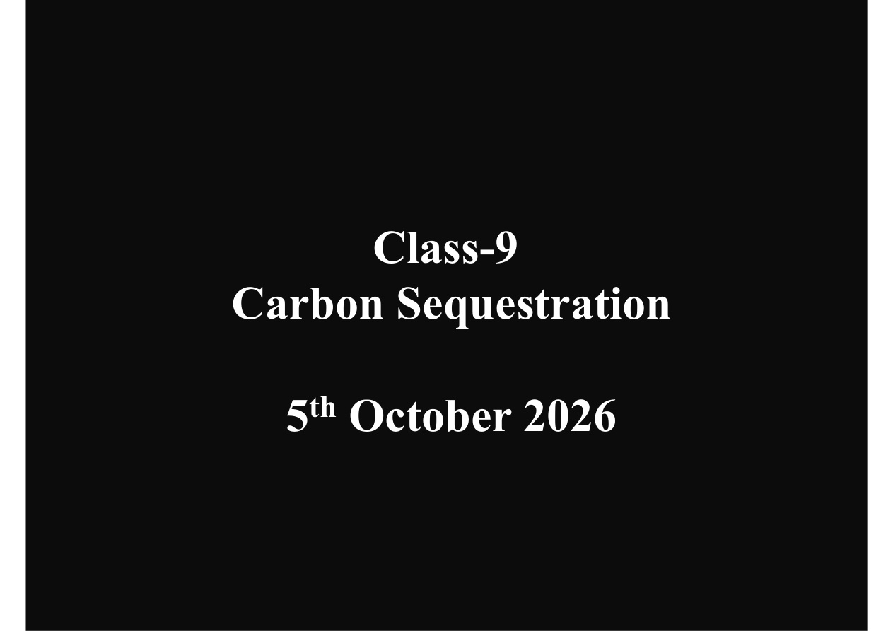
Class-9
- •Class-9 Carbon Sequestration 5th October 2026
This slide formalizes carbon sink dynamics and terrestrial/marine carbon capture. Dry forest biomass stores approximately 50% elemental carbon ($C = 0.5 \times \text{Biomass}$), which converts to $CO_2$ equivalents via stoichiometric factor 44/12 (3.67). It highlights how afforestation, agroforestry, and soil organic carbon preservation provide crucial negative emissions.
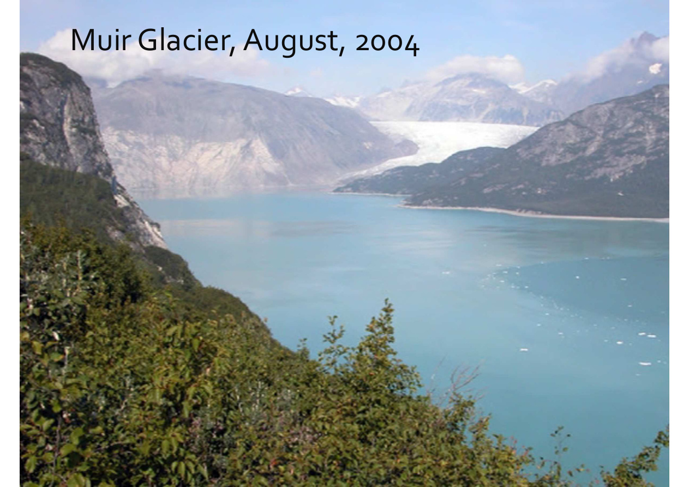
Muir Glacier, August, 1941
- •Muir Glacier, August, 1941 Muir Glacier, August, 2004
This slide presents essential concepts in Lecture 09: Muir Glacier, August, 1941. Specifically, it examines Muir Glacier, August, 1941 Muir Glacier, August, 2004. In the broader context of Carbon sequestration in terrestrial sinks: Muir Glacier retreat evidence (1941 vs 2004), atmospheric CO2 trend (419 ppm), global carbon budget partitioning (40% atm, 30% ocean, 30% land), forest biomass carbon accounting (dry wood = 50% carbon), FAO global forest statistics (4.06B ha), soil organic carbon (SOC) reservoir down to 1m depth, agroforestry practices (windbreaks, riparian buffers, silvopasture), and forest age vs carbon productivity curves., mastering this material is critical for analyzing ecological tradeoffs, regulatory frameworks, and exam questions on environmental system dynamics.
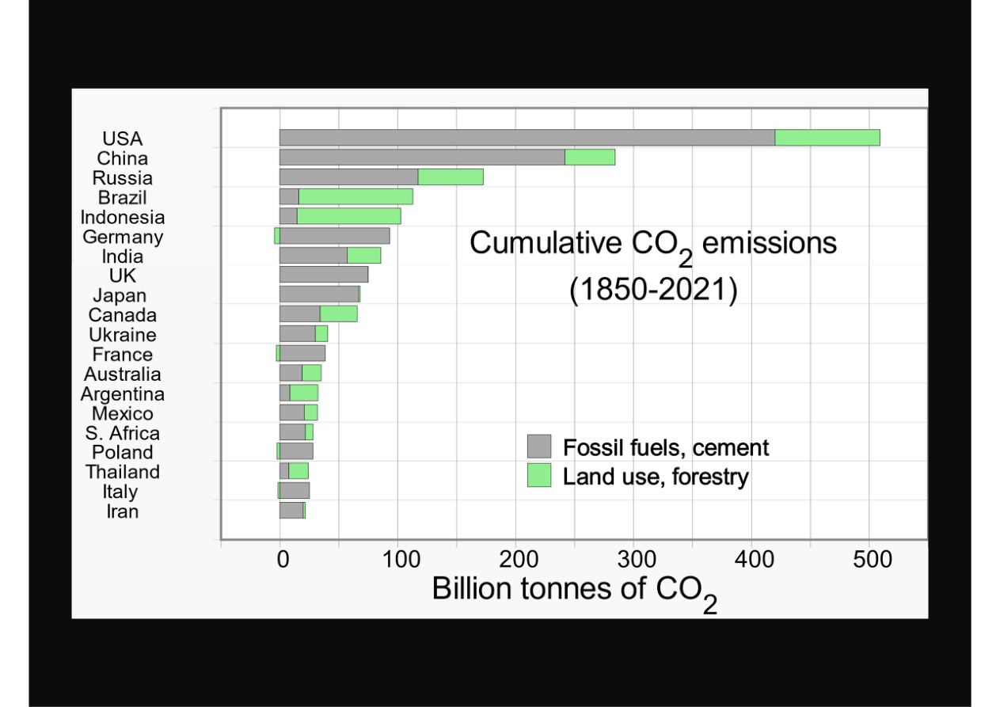
Slide 3
Visual figure / diagram presentation slide. Review the high-resolution render on the left.
This visual slide in Lecture 09 illustrates core structural mechanisms and empirical data for Slide 3. It provides essential visual context within the curriculum of Carbon sequestration in terrestrial sinks: Muir Glacier retreat evidence (1941 vs 2004), atmospheric CO2 trend (419 ppm), global carbon budget partitioning (40% atm, 30% ocean, 30% land), forest biomass carbon accounting (dry wood = 50% carbon), FAO global forest statistics (4.06B ha), soil organic carbon (SOC) reservoir down to 1m depth, agroforestry practices (windbreaks, riparian buffers, silvopasture), and forest age vs carbon productivity curves., directly connecting theoretical principles with real-world environmental technology observations.
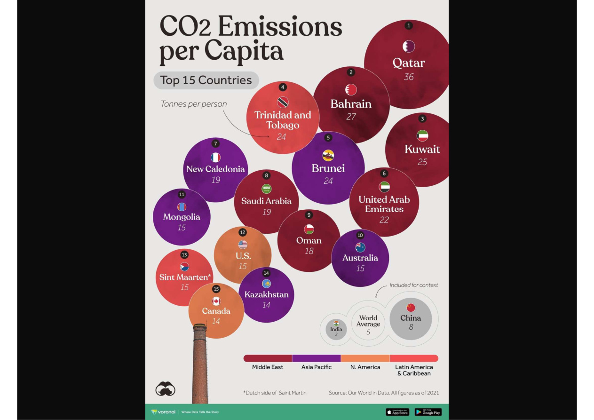
Slide 4
Visual figure / diagram presentation slide. Review the high-resolution render on the left.
This visual slide in Lecture 09 illustrates core structural mechanisms and empirical data for Slide 4. It provides essential visual context within the curriculum of Carbon sequestration in terrestrial sinks: Muir Glacier retreat evidence (1941 vs 2004), atmospheric CO2 trend (419 ppm), global carbon budget partitioning (40% atm, 30% ocean, 30% land), forest biomass carbon accounting (dry wood = 50% carbon), FAO global forest statistics (4.06B ha), soil organic carbon (SOC) reservoir down to 1m depth, agroforestry practices (windbreaks, riparian buffers, silvopasture), and forest age vs carbon productivity curves., directly connecting theoretical principles with real-world environmental technology observations.
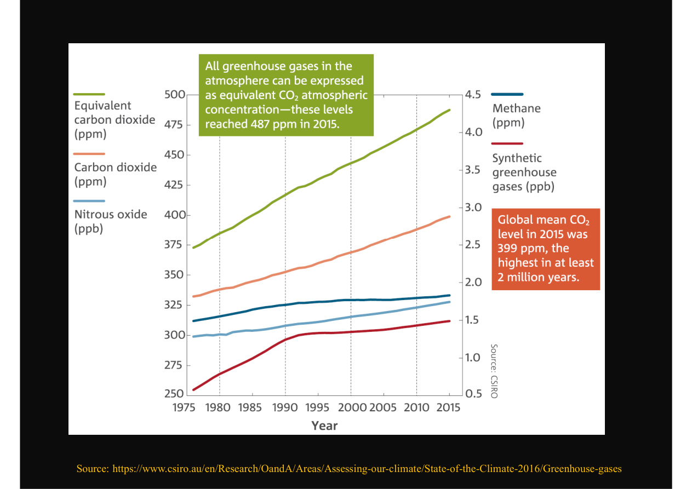
Source: https://www.csiro.au/en/Research/OandA/Areas/Assessing...
- •Source: https://www.csiro.au/en/Research/OandA/Areas/Assessing-our-climate/State-of-the-Climate-2016/Greenhouse-gases
This slide presents essential concepts in Lecture 09: Source: https://www.csiro.au/en/Research/OandA/Areas/Assessing.... Specifically, it examines Source: https://www.csiro.au/en/Research/OandA/Areas/Assessing-our-climate/State-of-the-Climate-2016/Greenhouse-gases. In the broader context of Carbon sequestration in terrestrial sinks: Muir Glacier retreat evidence (1941 vs 2004), atmospheric CO2 trend (419 ppm), global carbon budget partitioning (40% atm, 30% ocean, 30% land), forest biomass carbon accounting (dry wood = 50% carbon), FAO global forest statistics (4.06B ha), soil organic carbon (SOC) reservoir down to 1m depth, agroforestry practices (windbreaks, riparian buffers, silvopasture), and forest age vs carbon productivity curves., mastering this material is critical for analyzing ecological tradeoffs, regulatory frameworks, and exam questions on environmental system dynamics.
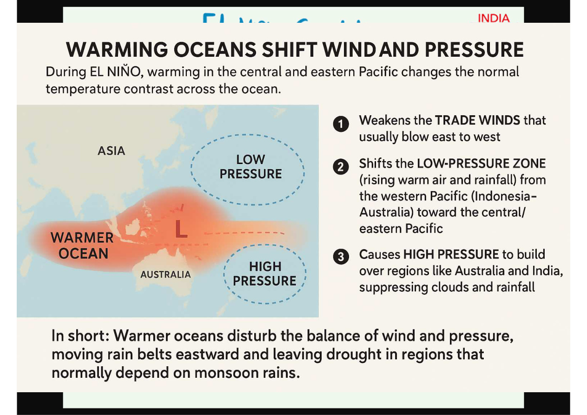
Slide 6
Visual figure / diagram presentation slide. Review the high-resolution render on the left.
This visual slide in Lecture 09 illustrates core structural mechanisms and empirical data for Slide 6. It provides essential visual context within the curriculum of Carbon sequestration in terrestrial sinks: Muir Glacier retreat evidence (1941 vs 2004), atmospheric CO2 trend (419 ppm), global carbon budget partitioning (40% atm, 30% ocean, 30% land), forest biomass carbon accounting (dry wood = 50% carbon), FAO global forest statistics (4.06B ha), soil organic carbon (SOC) reservoir down to 1m depth, agroforestry practices (windbreaks, riparian buffers, silvopasture), and forest age vs carbon productivity curves., directly connecting theoretical principles with real-world environmental technology observations.
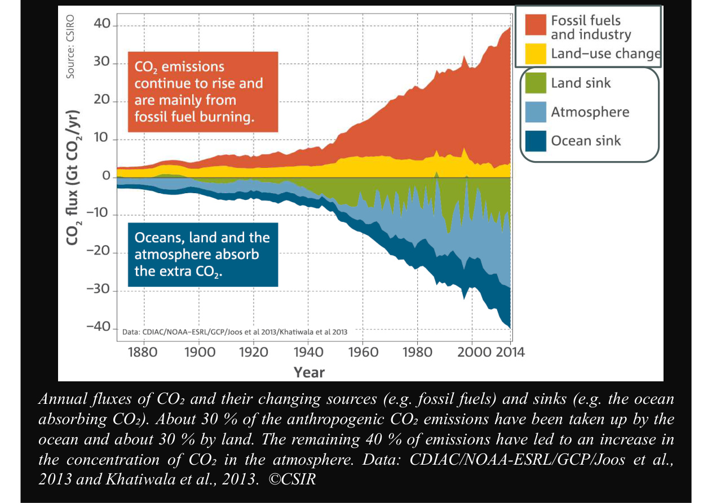
Annual fluxes of CO₂ and their changing sources (e.g. fossil f...
- •Annual fluxes of CO₂ and their changing sources (e.g. fossil fuels) and sinks (e.g. the ocean absorbing CO₂). About 30 % of the anthropogenic CO₂ emissions have been taken up by the ocean and about 30 % by land. The remaining 40 % of emissions have led to an increase in the concentration of CO₂ in the atmosphere. Data: CDIAC/NOAA-ESRL/GCP/Joos et al.,
This slide presents essential concepts in Lecture 09: Annual fluxes of CO₂ and their changing sources (e.g. fossil f.... Specifically, it examines Annual fluxes of CO₂ and their changing sources (e.g. fossil fuels) and sinks (e.g. the ocean absorbing CO₂). About 30 % of the anthropogenic CO₂ emissions have been taken up by the ocean and about 30 % by land. The remaining 40 % of emissions have led to an increase in the concentration of CO₂ in the atmosphere. Data: CDIAC/NOAA-ESRL/GCP/Joos et al.,. In the broader context of Carbon sequestration in terrestrial sinks: Muir Glacier retreat evidence (1941 vs 2004), atmospheric CO2 trend (419 ppm), global carbon budget partitioning (40% atm, 30% ocean, 30% land), forest biomass carbon accounting (dry wood = 50% carbon), FAO global forest statistics (4.06B ha), soil organic carbon (SOC) reservoir down to 1m depth, agroforestry practices (windbreaks, riparian buffers, silvopasture), and forest age vs carbon productivity curves., mastering this material is critical for analyzing ecological tradeoffs, regulatory frameworks, and exam questions on environmental system dynamics.
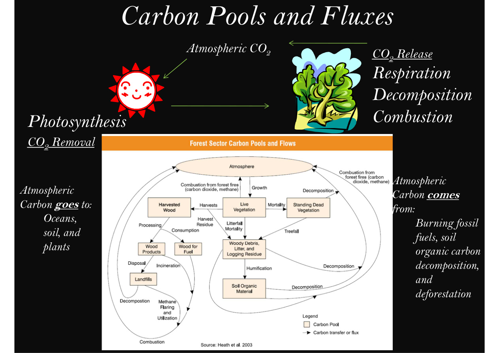
Carbon Pools and Fluxes
- •Carbon Pools and Fluxes Atmospheric CO2 Photosynthesis CO2 Removal
This slide presents essential concepts in Lecture 09: Carbon Pools and Fluxes. Specifically, it examines Carbon Pools and Fluxes Atmospheric CO2 Photosynthesis CO2 Removal. In the broader context of Carbon sequestration in terrestrial sinks: Muir Glacier retreat evidence (1941 vs 2004), atmospheric CO2 trend (419 ppm), global carbon budget partitioning (40% atm, 30% ocean, 30% land), forest biomass carbon accounting (dry wood = 50% carbon), FAO global forest statistics (4.06B ha), soil organic carbon (SOC) reservoir down to 1m depth, agroforestry practices (windbreaks, riparian buffers, silvopasture), and forest age vs carbon productivity curves., mastering this material is critical for analyzing ecological tradeoffs, regulatory frameworks, and exam questions on environmental system dynamics.
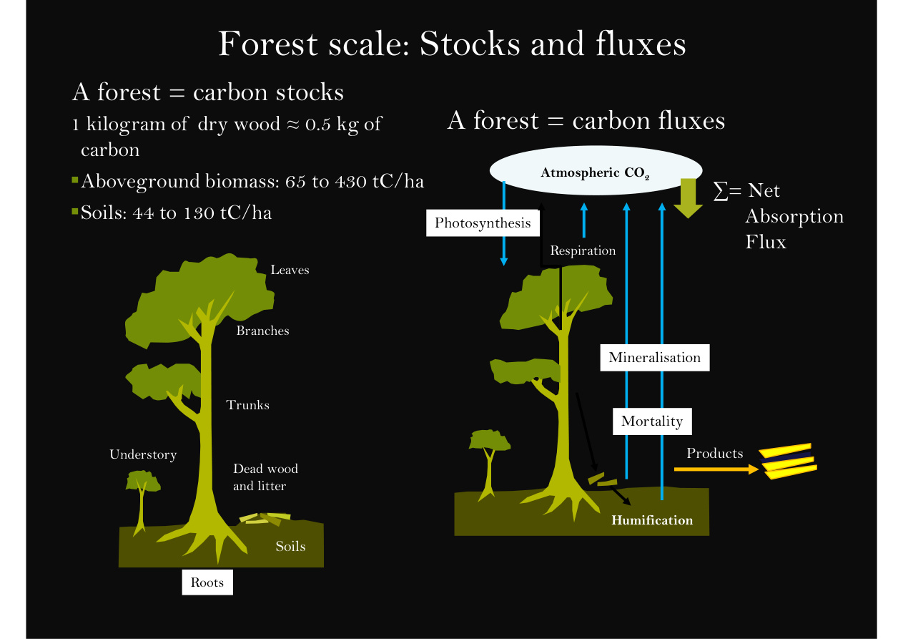
Forest scale: Stocks and fluxes
- •Forest scale: Stocks and fluxes A forest = carbon stocks 1 kilogram of dry wood ≈ 0.5 kg of carbon
This slide presents essential concepts in Lecture 09: Forest scale: Stocks and fluxes. Specifically, it examines Forest scale: Stocks and fluxes A forest = carbon stocks 1 kilogram of dry wood ≈ 0.5 kg of carbon. In the broader context of Carbon sequestration in terrestrial sinks: Muir Glacier retreat evidence (1941 vs 2004), atmospheric CO2 trend (419 ppm), global carbon budget partitioning (40% atm, 30% ocean, 30% land), forest biomass carbon accounting (dry wood = 50% carbon), FAO global forest statistics (4.06B ha), soil organic carbon (SOC) reservoir down to 1m depth, agroforestry practices (windbreaks, riparian buffers, silvopasture), and forest age vs carbon productivity curves., mastering this material is critical for analyzing ecological tradeoffs, regulatory frameworks, and exam questions on environmental system dynamics.
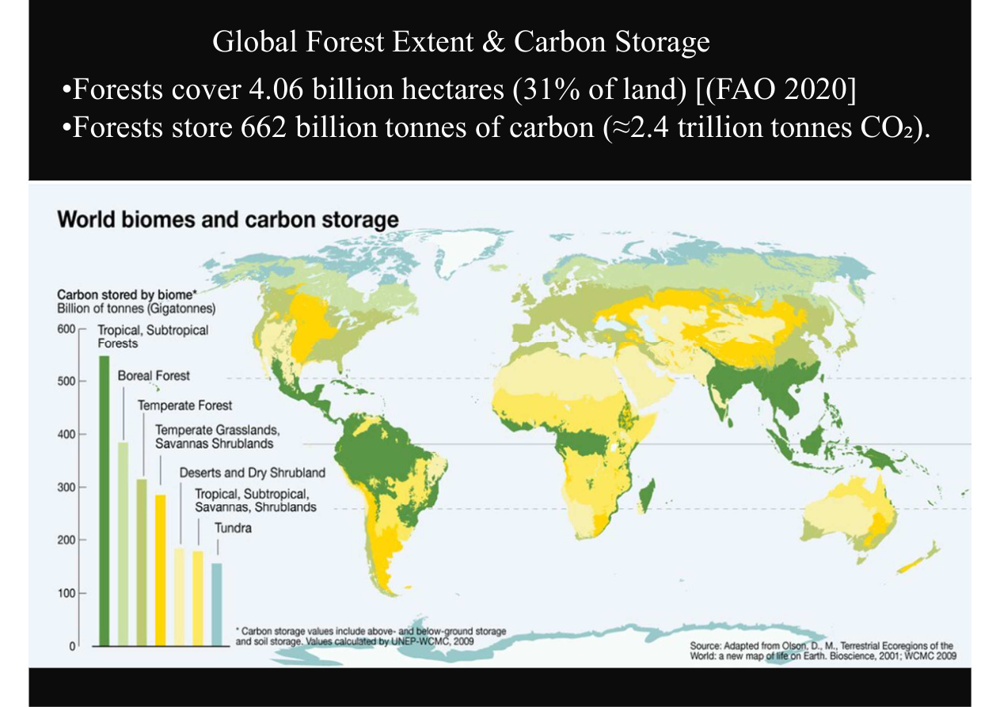
Global Forest Extent & Carbon Storage
- •Global Forest Extent & Carbon Storage •Forests cover 4.06 billion hectares (31% of land) [(FAO 2020] •Forests store 662 billion tonnes of carbon (≈2.4 trillion tonnes CO₂).
This slide presents essential concepts in Lecture 09: Global Forest Extent & Carbon Storage. Specifically, it examines Global Forest Extent & Carbon Storage •Forests cover 4.06 billion hectares (31% of land) [(FAO 2020] •Forests store 662 billion tonnes of carbon (≈2.4 trillion tonnes CO₂).. In the broader context of Carbon sequestration in terrestrial sinks: Muir Glacier retreat evidence (1941 vs 2004), atmospheric CO2 trend (419 ppm), global carbon budget partitioning (40% atm, 30% ocean, 30% land), forest biomass carbon accounting (dry wood = 50% carbon), FAO global forest statistics (4.06B ha), soil organic carbon (SOC) reservoir down to 1m depth, agroforestry practices (windbreaks, riparian buffers, silvopasture), and forest age vs carbon productivity curves., mastering this material is critical for analyzing ecological tradeoffs, regulatory frameworks, and exam questions on environmental system dynamics.
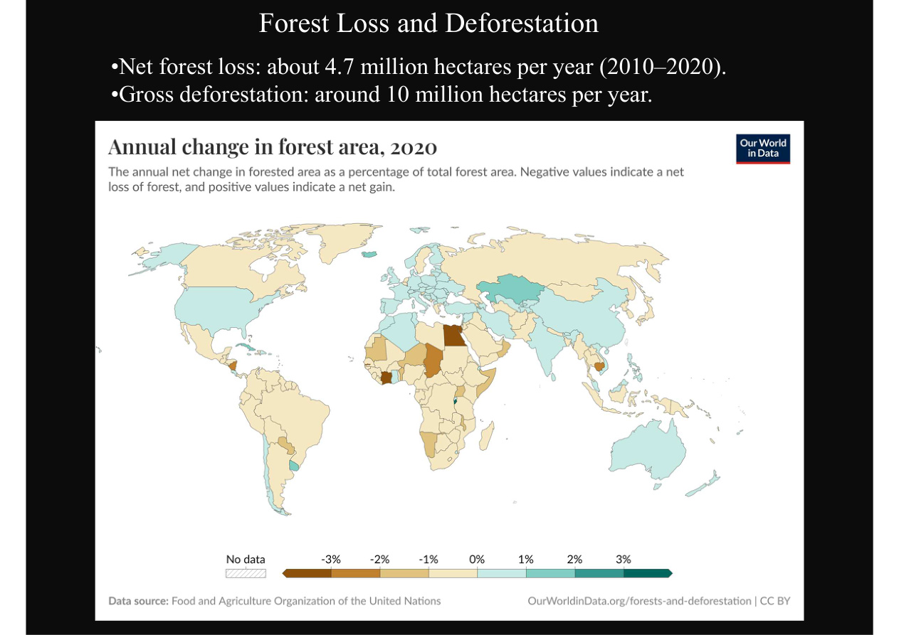
Forest Loss and Deforestation
- •Forest Loss and Deforestation •Net forest loss: about 4.7 million hectares per year (2010–2020). •Gross deforestation: around 10 million hectares per year.
This slide presents essential concepts in Lecture 09: Forest Loss and Deforestation. Specifically, it examines Forest Loss and Deforestation •Net forest loss: about 4.7 million hectares per year (2010–2020). •Gross deforestation: around 10 million hectares per year.. In the broader context of Carbon sequestration in terrestrial sinks: Muir Glacier retreat evidence (1941 vs 2004), atmospheric CO2 trend (419 ppm), global carbon budget partitioning (40% atm, 30% ocean, 30% land), forest biomass carbon accounting (dry wood = 50% carbon), FAO global forest statistics (4.06B ha), soil organic carbon (SOC) reservoir down to 1m depth, agroforestry practices (windbreaks, riparian buffers, silvopasture), and forest age vs carbon productivity curves., mastering this material is critical for analyzing ecological tradeoffs, regulatory frameworks, and exam questions on environmental system dynamics.
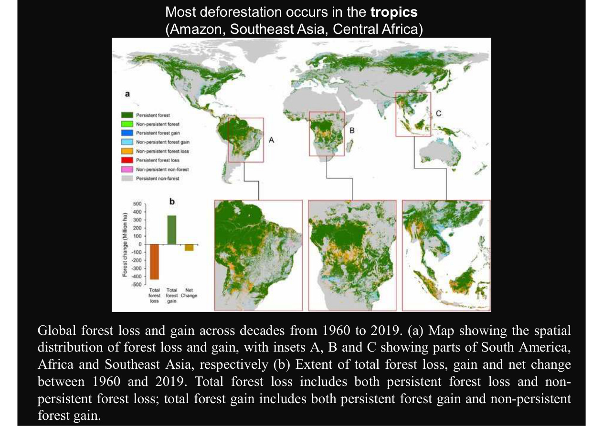
Most deforestation occurs in the tropics
- •Most deforestation occurs in the tropics (Amazon, Southeast Asia, Central Africa) Global forest loss and gain across decades from 1960 to 2019. (a) Map showing the spatial distribution of forest loss and gain, with insets A, B and C showing parts of South America,
This slide presents essential concepts in Lecture 09: Most deforestation occurs in the tropics. Specifically, it examines Most deforestation occurs in the tropics (Amazon, Southeast Asia, Central Africa) Global forest loss and gain across decades from 1960 to 2019. (a) Map showing the spatial distribution of forest loss and gain, with insets A, B and C showing parts of South America,. In the broader context of Carbon sequestration in terrestrial sinks: Muir Glacier retreat evidence (1941 vs 2004), atmospheric CO2 trend (419 ppm), global carbon budget partitioning (40% atm, 30% ocean, 30% land), forest biomass carbon accounting (dry wood = 50% carbon), FAO global forest statistics (4.06B ha), soil organic carbon (SOC) reservoir down to 1m depth, agroforestry practices (windbreaks, riparian buffers, silvopasture), and forest age vs carbon productivity curves., mastering this material is critical for analyzing ecological tradeoffs, regulatory frameworks, and exam questions on environmental system dynamics.
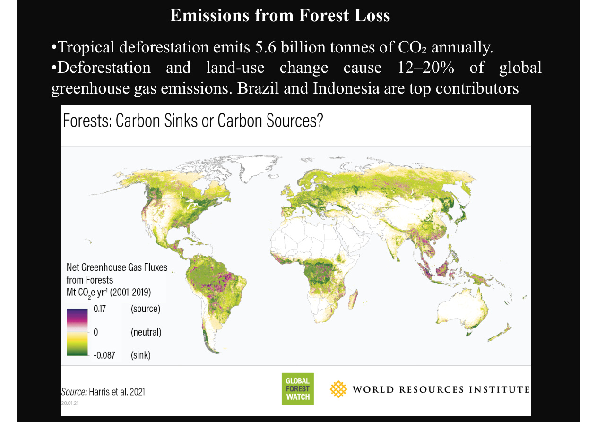
•Tropical deforestation emits 5.6 billion tonnes of CO₂ annually.
- ••Tropical deforestation emits 5.6 billion tonnes of CO₂ annually. •Deforestation and land-use
This slide presents essential concepts in Lecture 09: •Tropical deforestation emits 5.6 billion tonnes of CO₂ annually.. Specifically, it examines •Tropical deforestation emits 5.6 billion tonnes of CO₂ annually. •Deforestation and land-use. In the broader context of Carbon sequestration in terrestrial sinks: Muir Glacier retreat evidence (1941 vs 2004), atmospheric CO2 trend (419 ppm), global carbon budget partitioning (40% atm, 30% ocean, 30% land), forest biomass carbon accounting (dry wood = 50% carbon), FAO global forest statistics (4.06B ha), soil organic carbon (SOC) reservoir down to 1m depth, agroforestry practices (windbreaks, riparian buffers, silvopasture), and forest age vs carbon productivity curves., mastering this material is critical for analyzing ecological tradeoffs, regulatory frameworks, and exam questions on environmental system dynamics.
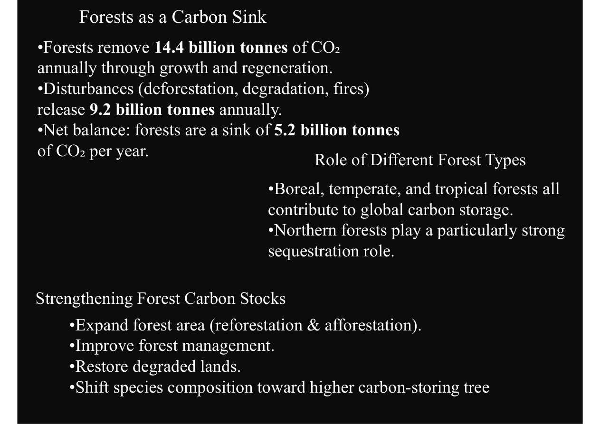
Forests as a Carbon Sink
- •Forests as a Carbon Sink •Forests remove 14.4 billion tonnes of CO₂ annually through growth and regeneration. •Disturbances (deforestation, degradation, fires)
This slide presents essential concepts in Lecture 09: Forests as a Carbon Sink. Specifically, it examines Forests as a Carbon Sink •Forests remove 14.4 billion tonnes of CO₂ annually through growth and regeneration. •Disturbances (deforestation, degradation, fires). In the broader context of Carbon sequestration in terrestrial sinks: Muir Glacier retreat evidence (1941 vs 2004), atmospheric CO2 trend (419 ppm), global carbon budget partitioning (40% atm, 30% ocean, 30% land), forest biomass carbon accounting (dry wood = 50% carbon), FAO global forest statistics (4.06B ha), soil organic carbon (SOC) reservoir down to 1m depth, agroforestry practices (windbreaks, riparian buffers, silvopasture), and forest age vs carbon productivity curves., mastering this material is critical for analyzing ecological tradeoffs, regulatory frameworks, and exam questions on environmental system dynamics.
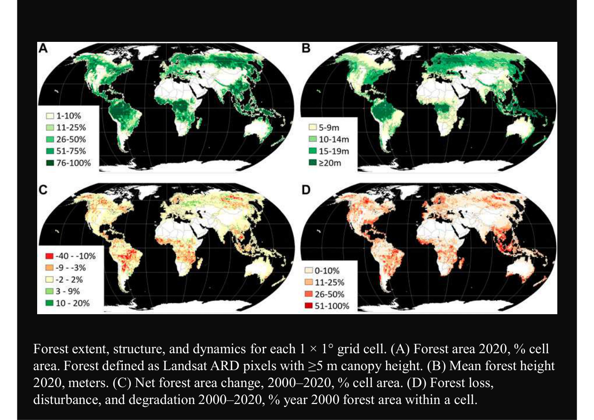
Forest extent, structure, and dynamics for each 1 × 1° grid ce...
- •Forest extent, structure, and dynamics for each 1 × 1° grid cell. (A) Forest area 2020, % cell area. Forest defined as Landsat ARD pixels with ≥5 m canopy height. (B) Mean forest height 2020, meters. (C) Net forest area change, 2000–2020, % cell area. (D) Forest loss, disturbance, and degradation 2000–2020, % year 2000 forest area within a cell.
This slide explores satellite remote sensing principles in environmental monitoring. By analyzing multi-spectral radiance values across visible, Near-Infrared (NIR), Shortwave-Infrared (SWIR), and Thermal bands, geospatial algorithms compute vegetation vigor indices (NDVI) and detect multi-decadal land use land cover (LULC) changes with high spatial fidelity.
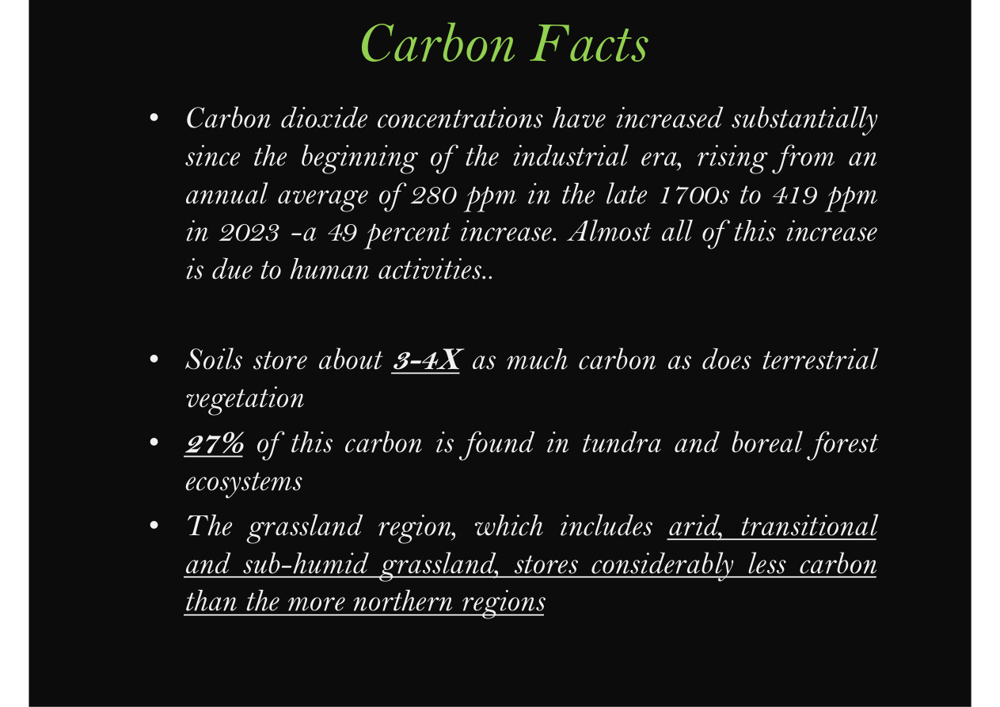
Carbon Facts
- •Carbon Facts • Carbon dioxide concentrations have increased substantially since the beginning of the industrial era, rising from an annual average of 280 ppm in the late 1700s to 419 ppm
This slide presents essential concepts in Lecture 09: Carbon Facts. Specifically, it examines Carbon Facts • Carbon dioxide concentrations have increased substantially since the beginning of the industrial era, rising from an annual average of 280 ppm in the late 1700s to 419 ppm. In the broader context of Carbon sequestration in terrestrial sinks: Muir Glacier retreat evidence (1941 vs 2004), atmospheric CO2 trend (419 ppm), global carbon budget partitioning (40% atm, 30% ocean, 30% land), forest biomass carbon accounting (dry wood = 50% carbon), FAO global forest statistics (4.06B ha), soil organic carbon (SOC) reservoir down to 1m depth, agroforestry practices (windbreaks, riparian buffers, silvopasture), and forest age vs carbon productivity curves., mastering this material is critical for analyzing ecological tradeoffs, regulatory frameworks, and exam questions on environmental system dynamics.
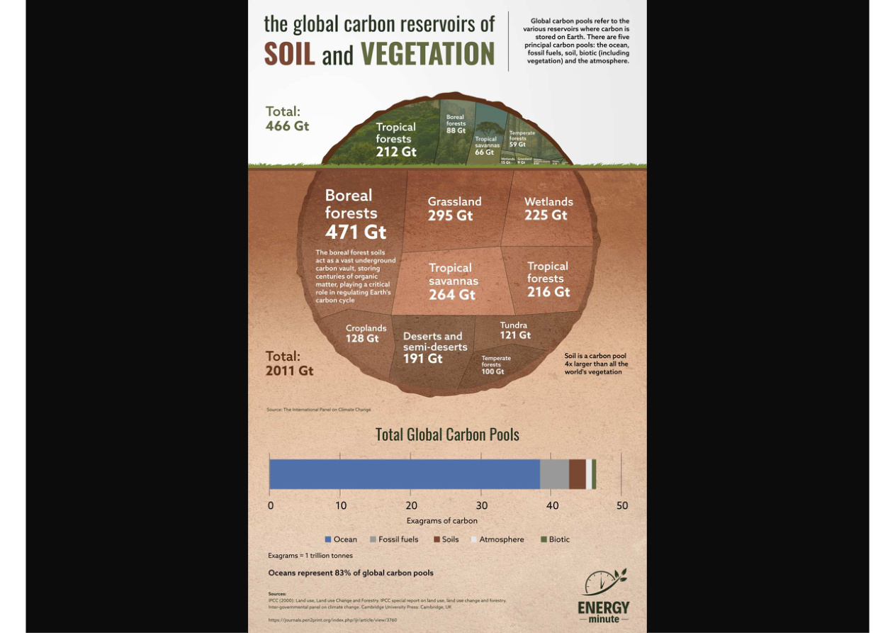
Slide 17
Visual figure / diagram presentation slide. Review the high-resolution render on the left.
This visual slide in Lecture 09 illustrates core structural mechanisms and empirical data for Slide 17. It provides essential visual context within the curriculum of Carbon sequestration in terrestrial sinks: Muir Glacier retreat evidence (1941 vs 2004), atmospheric CO2 trend (419 ppm), global carbon budget partitioning (40% atm, 30% ocean, 30% land), forest biomass carbon accounting (dry wood = 50% carbon), FAO global forest statistics (4.06B ha), soil organic carbon (SOC) reservoir down to 1m depth, agroforestry practices (windbreaks, riparian buffers, silvopasture), and forest age vs carbon productivity curves., directly connecting theoretical principles with real-world environmental technology observations.
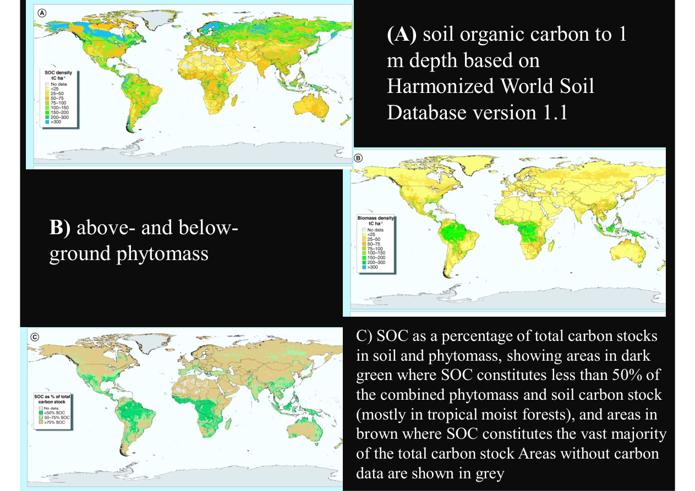
(A) soil organic carbon to 1
- •(A) soil organic carbon to 1 m depth based on Harmonized World Soil Database version 1.1
This slide presents essential concepts in Lecture 09: (A) soil organic carbon to 1. Specifically, it examines (A) soil organic carbon to 1 m depth based on Harmonized World Soil Database version 1.1. In the broader context of Carbon sequestration in terrestrial sinks: Muir Glacier retreat evidence (1941 vs 2004), atmospheric CO2 trend (419 ppm), global carbon budget partitioning (40% atm, 30% ocean, 30% land), forest biomass carbon accounting (dry wood = 50% carbon), FAO global forest statistics (4.06B ha), soil organic carbon (SOC) reservoir down to 1m depth, agroforestry practices (windbreaks, riparian buffers, silvopasture), and forest age vs carbon productivity curves., mastering this material is critical for analyzing ecological tradeoffs, regulatory frameworks, and exam questions on environmental system dynamics.
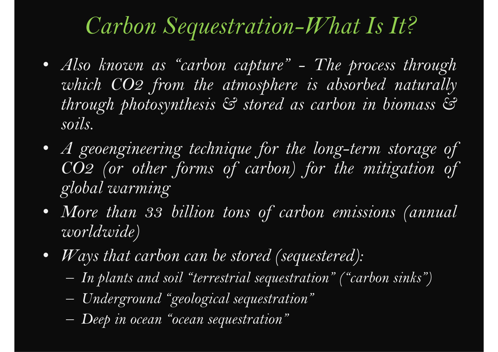
Carbon Sequestration-What Is It?
- •Carbon Sequestration-What Is It? • Also known as “carbon capture” - The process through which CO2 from the atmosphere is absorbed naturally through photosynthesis & stored as carbon in biomass &
This slide formalizes carbon sink dynamics and terrestrial/marine carbon capture. Dry forest biomass stores approximately 50% elemental carbon ($C = 0.5 \times \text{Biomass}$), which converts to $CO_2$ equivalents via stoichiometric factor 44/12 (3.67). It highlights how afforestation, agroforestry, and soil organic carbon preservation provide crucial negative emissions.
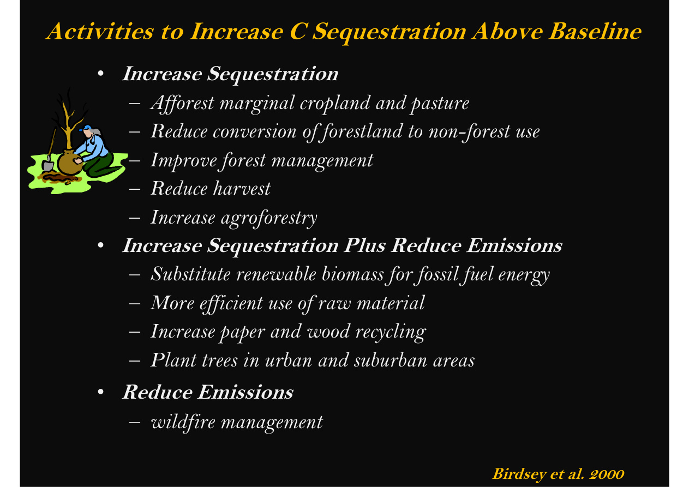
Activities to Increase C Sequestration Above Baseline
- •Activities to Increase C Sequestration Above Baseline • Increase Sequestration – Afforest marginal cropland and pasture – Reduce conversion of forestland to non-forest use
This slide presents essential concepts in Lecture 09: Activities to Increase C Sequestration Above Baseline. Specifically, it examines Activities to Increase C Sequestration Above Baseline • Increase Sequestration – Afforest marginal cropland and pasture – Reduce conversion of forestland to non-forest use. In the broader context of Carbon sequestration in terrestrial sinks: Muir Glacier retreat evidence (1941 vs 2004), atmospheric CO2 trend (419 ppm), global carbon budget partitioning (40% atm, 30% ocean, 30% land), forest biomass carbon accounting (dry wood = 50% carbon), FAO global forest statistics (4.06B ha), soil organic carbon (SOC) reservoir down to 1m depth, agroforestry practices (windbreaks, riparian buffers, silvopasture), and forest age vs carbon productivity curves., mastering this material is critical for analyzing ecological tradeoffs, regulatory frameworks, and exam questions on environmental system dynamics.
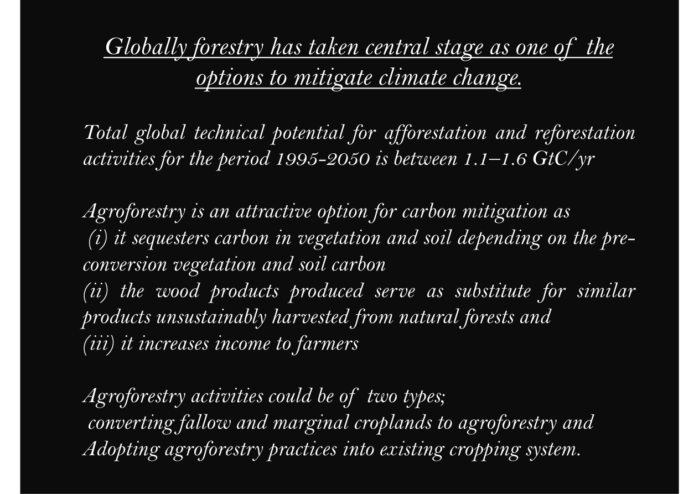
Globally forestry has taken central stage as one of the
- •Globally forestry has taken central stage as one of the options to mitigate climate change. Total global technical potential for afforestation and reforestation activities for the period 1995-2050 is between 1.1–1.6 GtC/yr
This slide presents essential concepts in Lecture 09: Globally forestry has taken central stage as one of the. Specifically, it examines Globally forestry has taken central stage as one of the options to mitigate climate change. Total global technical potential for afforestation and reforestation activities for the period 1995-2050 is between 1.1–1.6 GtC/yr. In the broader context of Carbon sequestration in terrestrial sinks: Muir Glacier retreat evidence (1941 vs 2004), atmospheric CO2 trend (419 ppm), global carbon budget partitioning (40% atm, 30% ocean, 30% land), forest biomass carbon accounting (dry wood = 50% carbon), FAO global forest statistics (4.06B ha), soil organic carbon (SOC) reservoir down to 1m depth, agroforestry practices (windbreaks, riparian buffers, silvopasture), and forest age vs carbon productivity curves., mastering this material is critical for analyzing ecological tradeoffs, regulatory frameworks, and exam questions on environmental system dynamics.
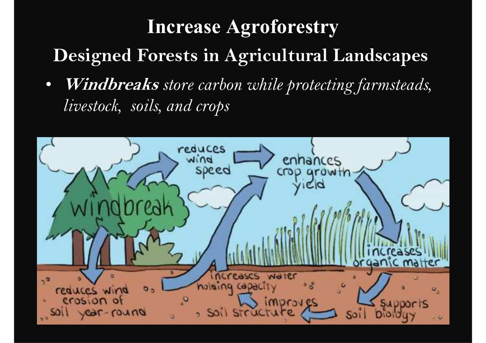
Increase Agroforestry
- •Increase Agroforestry • Windbreaks store carbon while protecting farmsteads, livestock, soils, and crops Designed Forests in Agricultural Landscapes
This slide presents essential concepts in Lecture 09: Increase Agroforestry. Specifically, it examines Increase Agroforestry • Windbreaks store carbon while protecting farmsteads, livestock, soils, and crops Designed Forests in Agricultural Landscapes. In the broader context of Carbon sequestration in terrestrial sinks: Muir Glacier retreat evidence (1941 vs 2004), atmospheric CO2 trend (419 ppm), global carbon budget partitioning (40% atm, 30% ocean, 30% land), forest biomass carbon accounting (dry wood = 50% carbon), FAO global forest statistics (4.06B ha), soil organic carbon (SOC) reservoir down to 1m depth, agroforestry practices (windbreaks, riparian buffers, silvopasture), and forest age vs carbon productivity curves., mastering this material is critical for analyzing ecological tradeoffs, regulatory frameworks, and exam questions on environmental system dynamics.
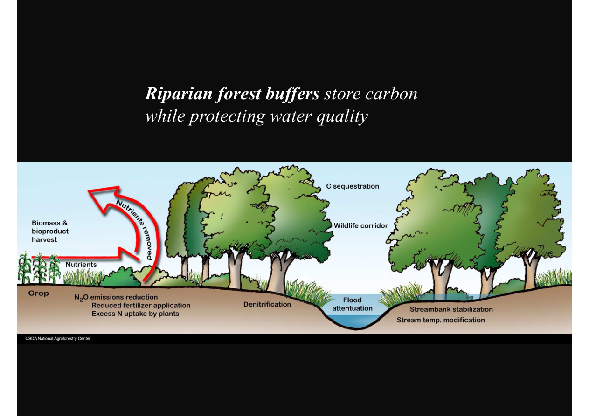
Riparian forest buffers store carbon
- •Riparian forest buffers store carbon while protecting water quality
This slide presents essential concepts in Lecture 09: Riparian forest buffers store carbon. Specifically, it examines Riparian forest buffers store carbon while protecting water quality. In the broader context of Carbon sequestration in terrestrial sinks: Muir Glacier retreat evidence (1941 vs 2004), atmospheric CO2 trend (419 ppm), global carbon budget partitioning (40% atm, 30% ocean, 30% land), forest biomass carbon accounting (dry wood = 50% carbon), FAO global forest statistics (4.06B ha), soil organic carbon (SOC) reservoir down to 1m depth, agroforestry practices (windbreaks, riparian buffers, silvopasture), and forest age vs carbon productivity curves., mastering this material is critical for analyzing ecological tradeoffs, regulatory frameworks, and exam questions on environmental system dynamics.
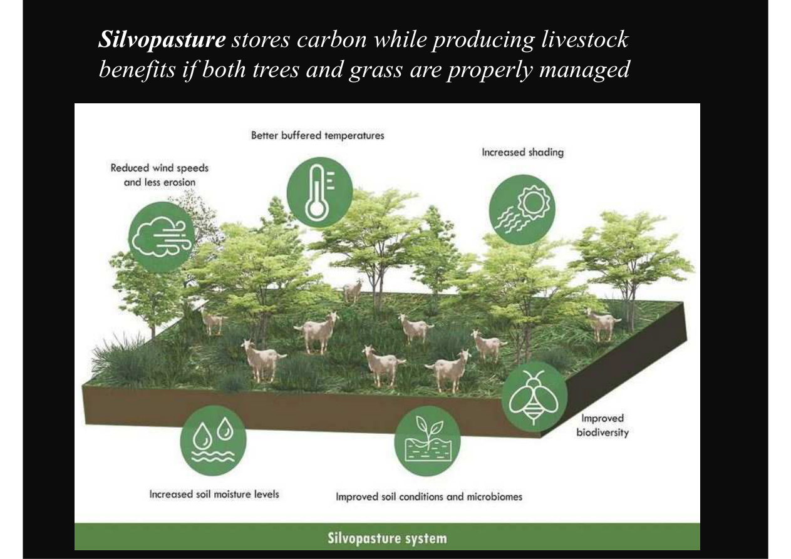
Silvopasture stores carbon while producing livestock
- •Silvopasture stores carbon while producing livestock benefits if both trees and grass are properly managed
This slide presents essential concepts in Lecture 09: Silvopasture stores carbon while producing livestock. Specifically, it examines Silvopasture stores carbon while producing livestock benefits if both trees and grass are properly managed. In the broader context of Carbon sequestration in terrestrial sinks: Muir Glacier retreat evidence (1941 vs 2004), atmospheric CO2 trend (419 ppm), global carbon budget partitioning (40% atm, 30% ocean, 30% land), forest biomass carbon accounting (dry wood = 50% carbon), FAO global forest statistics (4.06B ha), soil organic carbon (SOC) reservoir down to 1m depth, agroforestry practices (windbreaks, riparian buffers, silvopasture), and forest age vs carbon productivity curves., mastering this material is critical for analyzing ecological tradeoffs, regulatory frameworks, and exam questions on environmental system dynamics.
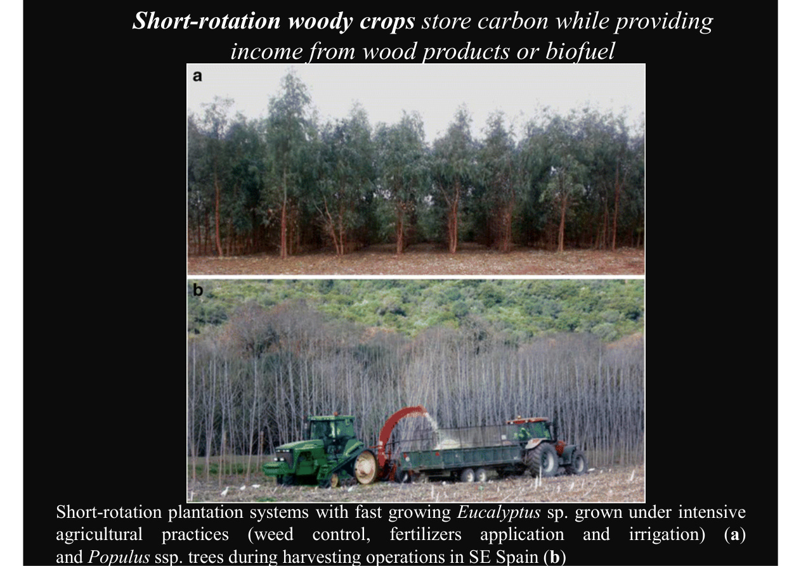
Short-rotation plantation systems with fast growing Eucalyptus...
- •Short-rotation plantation systems with fast growing Eucalyptus sp. grown under intensive agricultural practices (weed
This slide presents essential concepts in Lecture 09: Short-rotation plantation systems with fast growing Eucalyptus.... Specifically, it examines Short-rotation plantation systems with fast growing Eucalyptus sp. grown under intensive agricultural practices (weed. In the broader context of Carbon sequestration in terrestrial sinks: Muir Glacier retreat evidence (1941 vs 2004), atmospheric CO2 trend (419 ppm), global carbon budget partitioning (40% atm, 30% ocean, 30% land), forest biomass carbon accounting (dry wood = 50% carbon), FAO global forest statistics (4.06B ha), soil organic carbon (SOC) reservoir down to 1m depth, agroforestry practices (windbreaks, riparian buffers, silvopasture), and forest age vs carbon productivity curves., mastering this material is critical for analyzing ecological tradeoffs, regulatory frameworks, and exam questions on environmental system dynamics.
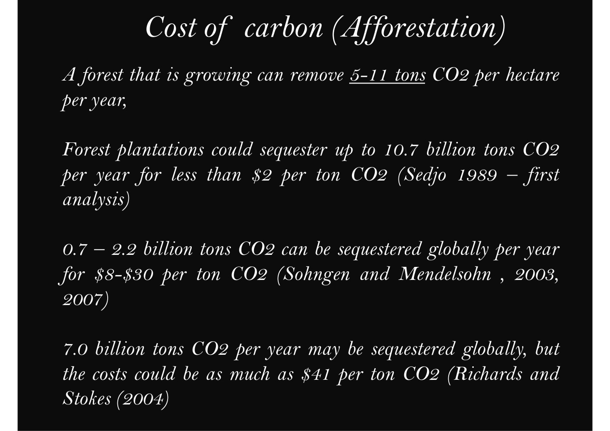
A forest that is growing can remove 5-11 tons CO2 per hectare
- •A forest that is growing can remove 5-11 tons CO2 per hectare per year, Forest plantations could sequester up to 10.7 billion tons CO2 per year for less than $2 per ton CO2 (Sedjo 1989 – first
This slide presents essential concepts in Lecture 09: A forest that is growing can remove 5-11 tons CO2 per hectare. Specifically, it examines A forest that is growing can remove 5-11 tons CO2 per hectare per year, Forest plantations could sequester up to 10.7 billion tons CO2 per year for less than $2 per ton CO2 (Sedjo 1989 – first. In the broader context of Carbon sequestration in terrestrial sinks: Muir Glacier retreat evidence (1941 vs 2004), atmospheric CO2 trend (419 ppm), global carbon budget partitioning (40% atm, 30% ocean, 30% land), forest biomass carbon accounting (dry wood = 50% carbon), FAO global forest statistics (4.06B ha), soil organic carbon (SOC) reservoir down to 1m depth, agroforestry practices (windbreaks, riparian buffers, silvopasture), and forest age vs carbon productivity curves., mastering this material is critical for analyzing ecological tradeoffs, regulatory frameworks, and exam questions on environmental system dynamics.
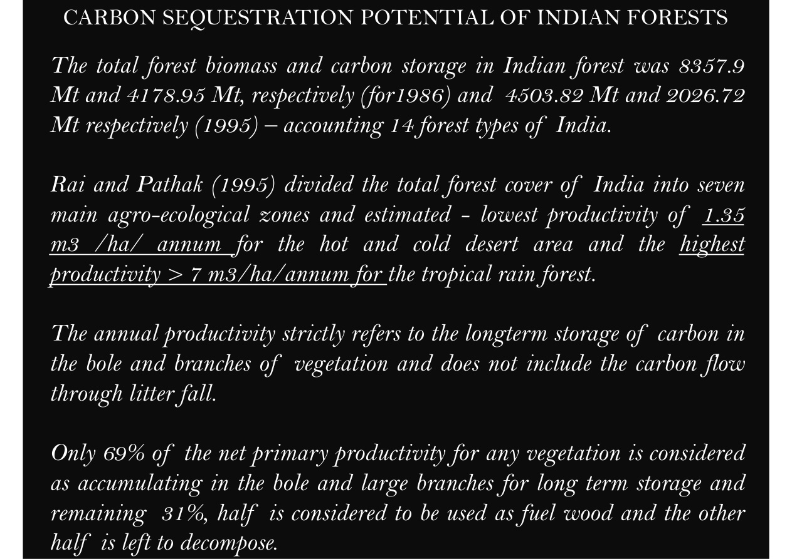
CARBON SEQUESTRATION POTENTIAL OF INDIAN FORESTS
- •CARBON SEQUESTRATION POTENTIAL OF INDIAN FORESTS The total forest biomass and carbon storage in Indian forest was 8357.9 Mt and 4178.95 Mt, respectively (for1986) and 4503.82 Mt and 2026.72 Mt respectively (1995) – accounting 14 forest types of India.
This slide formalizes carbon sink dynamics and terrestrial/marine carbon capture. Dry forest biomass stores approximately 50% elemental carbon ($C = 0.5 \times \text{Biomass}$), which converts to $CO_2$ equivalents via stoichiometric factor 44/12 (3.67). It highlights how afforestation, agroforestry, and soil organic carbon preservation provide crucial negative emissions.
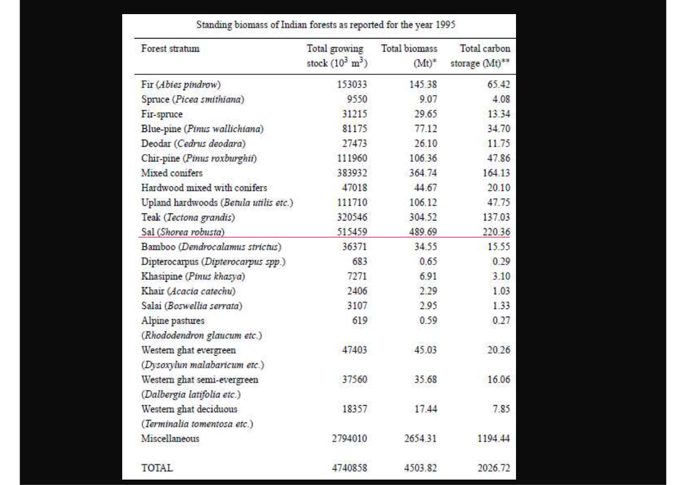
Slide 28
Visual figure / diagram presentation slide. Review the high-resolution render on the left.
This visual slide in Lecture 09 illustrates core structural mechanisms and empirical data for Slide 28. It provides essential visual context within the curriculum of Carbon sequestration in terrestrial sinks: Muir Glacier retreat evidence (1941 vs 2004), atmospheric CO2 trend (419 ppm), global carbon budget partitioning (40% atm, 30% ocean, 30% land), forest biomass carbon accounting (dry wood = 50% carbon), FAO global forest statistics (4.06B ha), soil organic carbon (SOC) reservoir down to 1m depth, agroforestry practices (windbreaks, riparian buffers, silvopasture), and forest age vs carbon productivity curves., directly connecting theoretical principles with real-world environmental technology observations.
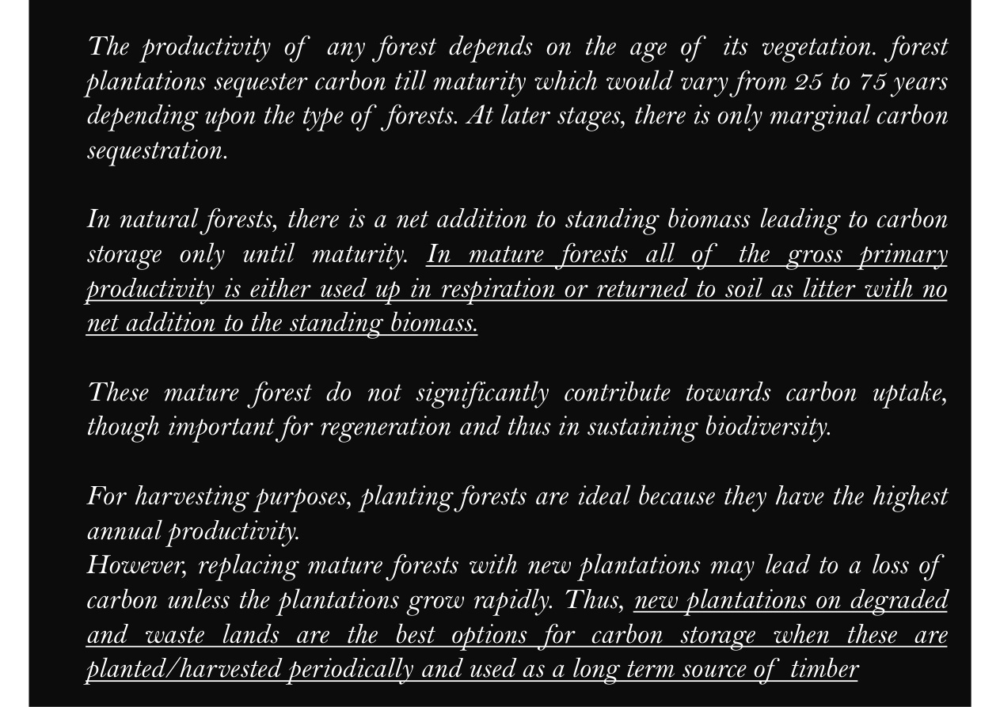
The productivity of any forest depends on the age of its veget...
- •The productivity of any forest depends on the age of its vegetation. forest plantations sequester carbon till maturity which would vary from 25 to 75 years depending upon the type of forests. At later stages, there is only marginal carbon sequestration.
This slide formalizes carbon sink dynamics and terrestrial/marine carbon capture. Dry forest biomass stores approximately 50% elemental carbon ($C = 0.5 \times \text{Biomass}$), which converts to $CO_2$ equivalents via stoichiometric factor 44/12 (3.67). It highlights how afforestation, agroforestry, and soil organic carbon preservation provide crucial negative emissions.
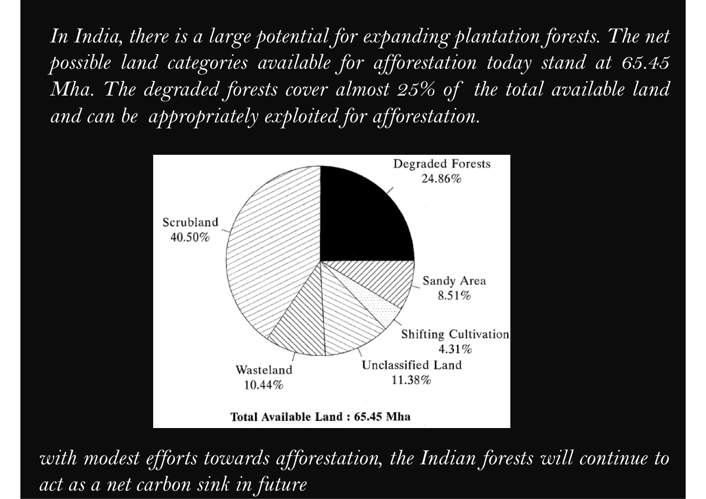
In India, there is a large potential for expanding plantation ...
- •In India, there is a large potential for expanding plantation forests. The net possible land categories available for afforestation today stand at 65.45 Mha. The degraded forests cover almost 25% of the total available land and can be appropriately exploited for afforestation.
This slide presents essential concepts in Lecture 09: In India, there is a large potential for expanding plantation .... Specifically, it examines In India, there is a large potential for expanding plantation forests. The net possible land categories available for afforestation today stand at 65.45 Mha. The degraded forests cover almost 25% of the total available land and can be appropriately exploited for afforestation.. In the broader context of Carbon sequestration in terrestrial sinks: Muir Glacier retreat evidence (1941 vs 2004), atmospheric CO2 trend (419 ppm), global carbon budget partitioning (40% atm, 30% ocean, 30% land), forest biomass carbon accounting (dry wood = 50% carbon), FAO global forest statistics (4.06B ha), soil organic carbon (SOC) reservoir down to 1m depth, agroforestry practices (windbreaks, riparian buffers, silvopasture), and forest age vs carbon productivity curves., mastering this material is critical for analyzing ecological tradeoffs, regulatory frameworks, and exam questions on environmental system dynamics.
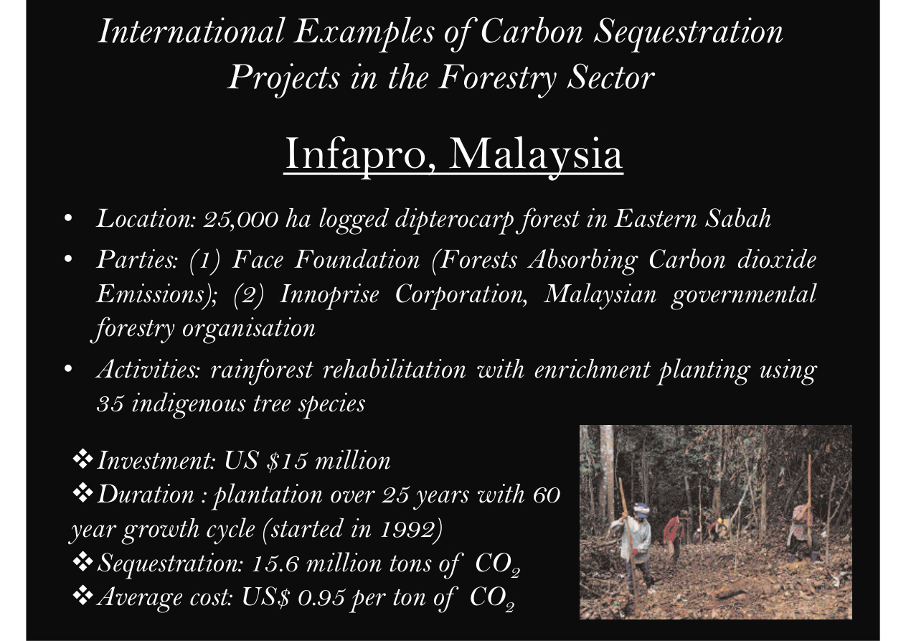
Infapro, Malaysia
- •Infapro, Malaysia • Location: 25,000 ha logged dipterocarp forest in Eastern Sabah • Parties: (1) Face Foundation (Forests Absorbing Carbon dioxide Emissions); (2) Innoprise Corporation, Malaysian governmental
This slide presents essential concepts in Lecture 09: Infapro, Malaysia. Specifically, it examines Infapro, Malaysia • Location: 25,000 ha logged dipterocarp forest in Eastern Sabah • Parties: (1) Face Foundation (Forests Absorbing Carbon dioxide Emissions); (2) Innoprise Corporation, Malaysian governmental. In the broader context of Carbon sequestration in terrestrial sinks: Muir Glacier retreat evidence (1941 vs 2004), atmospheric CO2 trend (419 ppm), global carbon budget partitioning (40% atm, 30% ocean, 30% land), forest biomass carbon accounting (dry wood = 50% carbon), FAO global forest statistics (4.06B ha), soil organic carbon (SOC) reservoir down to 1m depth, agroforestry practices (windbreaks, riparian buffers, silvopasture), and forest age vs carbon productivity curves., mastering this material is critical for analyzing ecological tradeoffs, regulatory frameworks, and exam questions on environmental system dynamics.
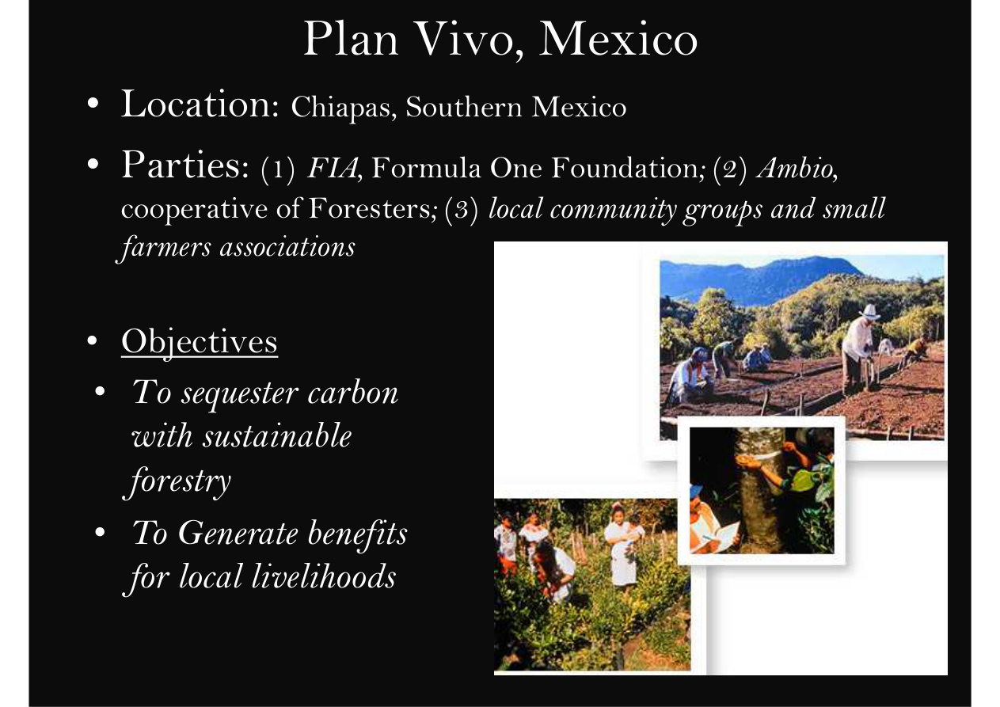
Plan Vivo, Mexico
- •Plan Vivo, Mexico • Location: Chiapas, Southern Mexico • Parties: (1) FIA, Formula One Foundation; (2) Ambio, cooperative of Foresters; (3) local community groups and small
This slide presents essential concepts in Lecture 09: Plan Vivo, Mexico. Specifically, it examines Plan Vivo, Mexico • Location: Chiapas, Southern Mexico • Parties: (1) FIA, Formula One Foundation; (2) Ambio, cooperative of Foresters; (3) local community groups and small. In the broader context of Carbon sequestration in terrestrial sinks: Muir Glacier retreat evidence (1941 vs 2004), atmospheric CO2 trend (419 ppm), global carbon budget partitioning (40% atm, 30% ocean, 30% land), forest biomass carbon accounting (dry wood = 50% carbon), FAO global forest statistics (4.06B ha), soil organic carbon (SOC) reservoir down to 1m depth, agroforestry practices (windbreaks, riparian buffers, silvopasture), and forest age vs carbon productivity curves., mastering this material is critical for analyzing ecological tradeoffs, regulatory frameworks, and exam questions on environmental system dynamics.
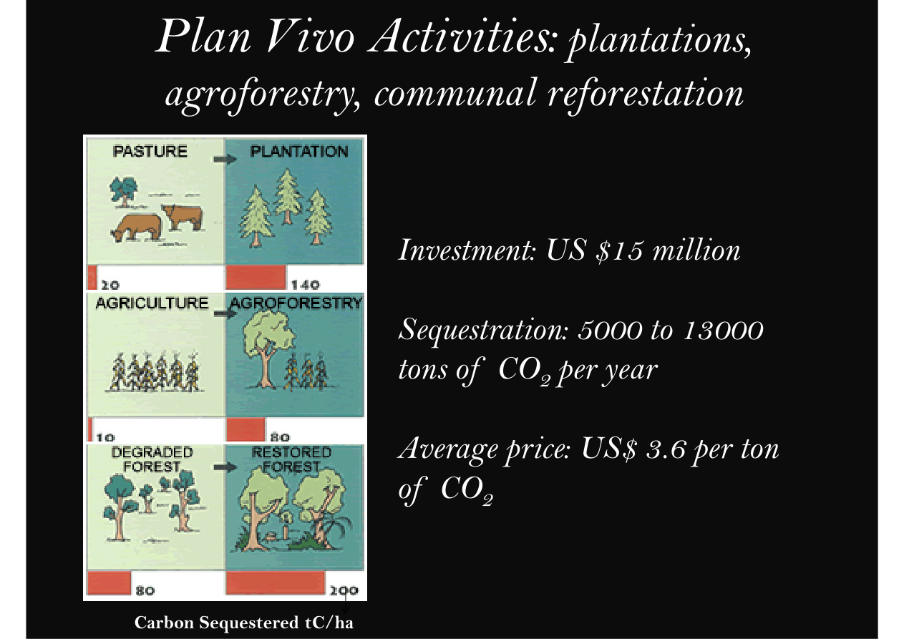
Plan Vivo Activities: plantations,
- •Plan Vivo Activities: plantations, agroforestry, communal reforestation Carbon Sequestered tC/ha Investment: US $15 million
This slide presents essential concepts in Lecture 09: Plan Vivo Activities: plantations,. Specifically, it examines Plan Vivo Activities: plantations, agroforestry, communal reforestation Carbon Sequestered tC/ha Investment: US $15 million. In the broader context of Carbon sequestration in terrestrial sinks: Muir Glacier retreat evidence (1941 vs 2004), atmospheric CO2 trend (419 ppm), global carbon budget partitioning (40% atm, 30% ocean, 30% land), forest biomass carbon accounting (dry wood = 50% carbon), FAO global forest statistics (4.06B ha), soil organic carbon (SOC) reservoir down to 1m depth, agroforestry practices (windbreaks, riparian buffers, silvopasture), and forest age vs carbon productivity curves., mastering this material is critical for analyzing ecological tradeoffs, regulatory frameworks, and exam questions on environmental system dynamics.
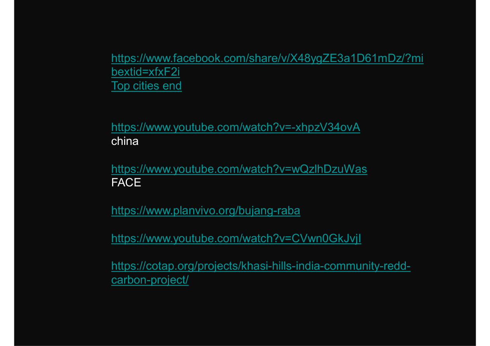
https://www.facebook.com/share/v/X48ygZE3a1D61mDz/?mi
Visual figure / diagram presentation slide. Review the high-resolution render on the left.
This slide presents essential concepts in Lecture 09: https://www.facebook.com/share/v/X48ygZE3a1D61mDz/?mi. Specifically, it examines https://www.facebook.com/share/v/X48ygZE3a1D61mDz/?mi bextid=xfxF2i Top cities end https://www.youtube.com/watch?v=-xhpz. In the broader context of Carbon sequestration in terrestrial sinks: Muir Glacier retreat evidence (1941 vs 2004), atmospheric CO2 trend (419 ppm), global carbon budget partitioning (40% atm, 30% ocean, 30% land), forest biomass carbon accounting (dry wood = 50% carbon), FAO global forest statistics (4.06B ha), soil organic carbon (SOC) reservoir down to 1m depth, agroforestry practices (windbreaks, riparian buffers, silvopasture), and forest age vs carbon productivity curves., mastering this material is critical for analyzing ecological tradeoffs, regulatory frameworks, and exam questions on environmental system dynamics.
🌲 Terrestrial Carbon Sink & Soil Sequestration Calculator
Model carbon removal flux across afforestation hectares, biochar amendment, and soil organic carbon (SOC) conservation.
Active Recall Flashcards
Test yourself on essential slide definitions, reactions, and principles before flipping.
Exam Traps, Fallacies & Professor Emphasis Points
Common student misconceptions and subtle distinctions tested in Midsem and Endsem exams.
- ⚠️ Trap: Assuming tree planting alone can permanently solve fossil fuel emissions. Biological terrestrial sinks can saturate, and stored forest carbon can be released back to the atmosphere via wildfires, drought, or logging.
- ⚠️ Exam Tip: Be sure to distinguish between Point-Source CCS (capturing from high-concentration industrial smokestacks) and Direct Air Capture (capturing from ambient 420 ppm air).
Concept Check Quiz
Instant feedback on core conceptual and quantitative questions from the lecture slides.
Complete Slide Deck Quick-Jump Gallery
Quick visual reference of all 34 slides across this lecture deck with PDF downloads.